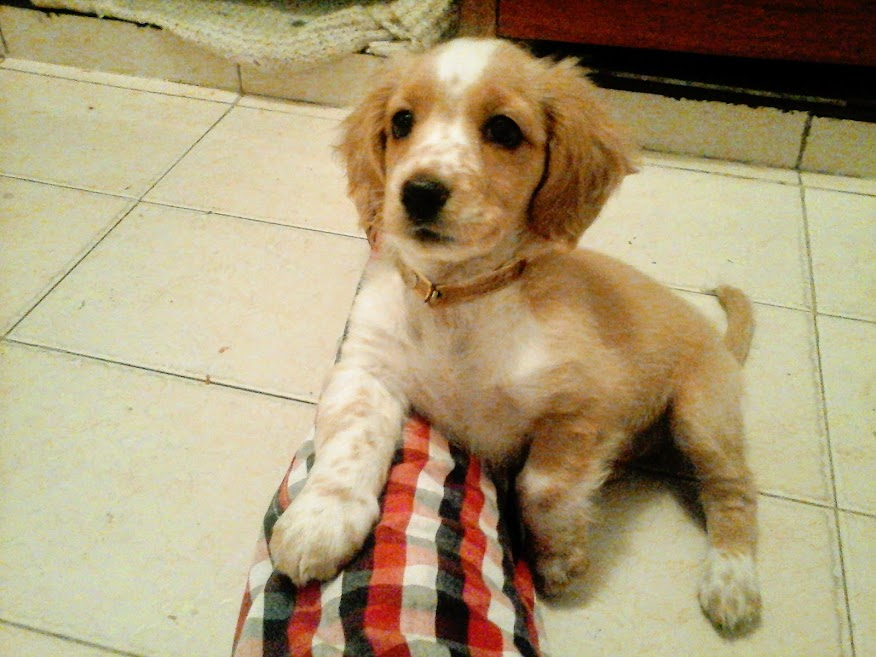

Mantener un peso saludable
Este consejo aplica tanto para mascotas como para los dueños. Uno lleva una vida más ligera cuando no tiene que preocuparse por cargar kilos extra. Tú controlas lo que les estás dando de comer. También controla sus porciones y asegúrate que están caminando o corriendo lo suficiente para quemar las calorías. Si hace falta, cómprale también un juguete que lo mantenga activo aún dentro de casa.
Invierte en su entrenamiento.
Las clases para las mascotas benefician al dueño antes que a nadie, pues le otorgan el control tanto para situaciones básicas, como soltar algo que tenga en la boca que no deba masticar, o quedarse tranquilo, o incluso en ocasiones que se presenten. También es bueno para la socialización de las mascotas, con otras personas, con niños o con otros animales. Mira este enternecedor ejemplo, donde un perro ayuda a un cachorro a bajar las escaleras:
Estimulación mental.
“Un perro cansado es un perro feliz”. Por otro lado, una mascota aburrida te costará cientos de zapatos, fundas, cajas y objetos mordisqueados. Invierte en juguetes interactivos que los mantendrán ocupados incluso cuando tengas que salir de casa.